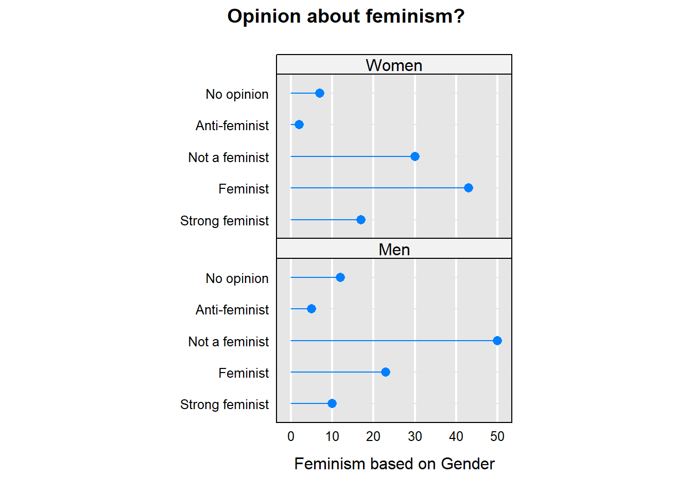
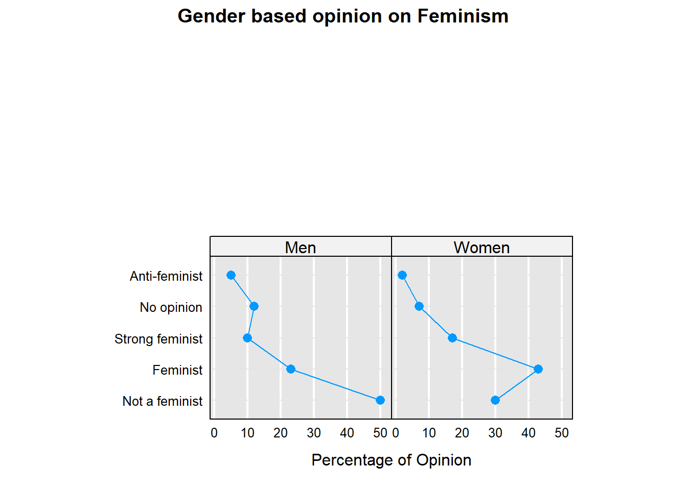

The graph uses horizontal bars to compare the percentages of men and women in five feminist belief categories: “Strong feminist,” “Feminist,” “Not a feminist,” “Anti-feminist,” and “No opinion.”
Men are represented by blue bars, while women are represented by yellow bars.
Icons of male and female figures are placed above the bars.
Percentages for each category are labeled on the bars.
Drawbacks of Original Graph
Color Contrast: There is not enough color difference between men’s blue and women’s yellow. Viewers could find it difficult to distinguish between the two groups fast.
Recommendation: To improve clarity, use more distinct colors Labeling: Especially for viewers with visual impairments, the small size of the labels, which include percentages and category names, may make them difficult to read.
For improved readability, consider using bold text or increasing the font size.
Visual Clarity: There isn’t any obvious hierarchy or grouping. The bars are arranged logically in no particular order, just side by side.
To make comparisons easier, consider arranging the bars in decreasing order
Gender Symbols: Using male and female icons as gender symbols creates extra complexity and doesn’t help with comprehending the data. It would be simpler to remove the gender symbols from the graph.
Suggested Enhancements:
Color Enhancement:
Improved differentiation can be achieved by using distinct colors for each type. Label Clarity:
Font sizes for percentages and category labels should be larger.
For improved association, place labels by defining the X and Y axes. logical sequence
Sort the bars by Types, for example, going from “Anti-Feminist” to “Strong Feminist.”
For simpler comparison, combine related categories (feminist beliefs, for example). Get Rid of Gender Symbols
To make the graph less cluttered, remove the icons for men and women.
Instead, make use of legible labels.
Special Efforts:
I took into consideration best practices for data visualization, such as color selection, labeling, and logical grouping.
I concentrated on enhancing clarity, readability, and visual impact during the redesign process.
An attempt was made to improve the graph’s efficiency and simplify it.
Redesigned Graph:
Original Graph: The original graph used horizontal bars to show men’s and women’s self-identified feminist beliefs. But its lack of grouping, tiny labeling, and low color contrast were its problems.
Redesigned Graph: For each belief category, I made a grouped bar chart with a different color. Comparing men and women side by side is made easy. The graph is more visually appealing and the labels are apparent.
Patterns in the Redesigned Graph:
Strong Feminist:
Women (17%) identify more as strong feminists than men (10%).
Feminist:
Women (43%) significantly outnumber men (23%) in this category.
Not a Feminist:
A higher percentage of men (50%) identify as not feminists compared to women (30%).
Anti-feminist:
Very few respondents (both men and women) identify as anti-feminists (5% men, 2% women).
No Opinion:
Men (12%) have slightly more no-opinion responses than women (7%).
Concluding Remarks:
The redesigned graph successfully draws attention to the disparities in feminist beliefs between genders.
Next actions:
Gather more information to confirm these trends in a range of demographics.
Investigate other factors (such as age and education) to understand differences.
For more insights, think about creating an alternative plot (a stacked bar chart, for example).
In summary, the redesigned graph provides clearer insights and is substantially better than the original design
Creating a Dotplot
library(lattice)library(tidyverse)
── Attaching core tidyverse packages ──────────────────────── tidyverse 2.0.0 ──
✔ dplyr 1.1.4 ✔ readr 2.1.5
✔ forcats 1.0.0 ✔ stringr 1.5.1
✔ ggplot2 3.4.4 ✔ tibble 3.2.1
✔ lubridate 1.9.3 ✔ tidyr 1.3.1
✔ purrr 1.0.2
── Conflicts ────────────────────────────────────────── tidyverse_conflicts() ──
✖ dplyr::filter() masks stats::filter()
✖ dplyr::lag() masks stats::lag()
ℹ Use the conflicted package (<http://conflicted.r-lib.org/>) to force all conflicts to become errors
library(plotly)
Attaching package: 'plotly'
The following object is masked from 'package:ggplot2':
last_plot
The following object is masked from 'package:stats':
filter
The following object is masked from 'package:graphics':
layout
From the Original Graph Percentages of Men and Women are stored in the Men and Women Vector respectively and then these two vector values are stored in the Matrix form by using cbind.
Men <-c(10,23,50,5,12)Women <-c(17,43,30,2,7)mat <-cbind(Men, Women)mat
Men Women
[1,] 10 17
[2,] 23 43
[3,] 50 30
[4,] 5 2
[5,] 12 7
Type <-c("Strong feminist", "Feminist","Not a feminist","Anti-feminist", "No opinion")Gender <-c("Men","Women")colnames(mat) <- Genderrownames(mat) <- Typemat
Men Women
Strong feminist 10 17
Feminist 23 43
Not a feminist 50 30
Anti-feminist 5 2
No opinion 12 7
The below dotplot visualizes opinions about feminism based on gender, with points representing percentages in different categories.
Feminism =dotplot(mat, groups =FALSE,layout =c(1, 2), aspect = .7,origin =0,type =c("p","h"),main ="Opinion about feminism?",xlab ="Feminism based on Gender",scales =list(x =list(tck =0, alternating =FALSE)),panel =function(...){panel.fill(rgb(.9,.9,.9))panel.grid(h =0,v =-1,col ="white",lwd =2)panel.dotplot(col =rgb(0,.5,1),cex =1.1,...) })Feminism

Creating a Bar chart
data <-data.frame(Men =c(10, 23, 50, 5, 12),Women =c(17, 43, 30, 2, 7),row.names =c("Strong feminist", "Feminist", "Not a feminist", "Anti-feminist", "No opinion"))print(data)
Men Women
Strong feminist 10 17
Feminist 23 43
Not a feminist 50 30
Anti-feminist 5 2
No opinion 12 7
summary(data)
Men Women
Min. : 5 Min. : 2.0
1st Qu.:10 1st Qu.: 7.0
Median :12 Median :17.0
Mean :20 Mean :19.8
3rd Qu.:23 3rd Qu.:30.0
Max. :50 Max. :43.0
data$Opinion <-row.names(data)library(tidyr)Feminismdata <-gather(data, Gender, Count, -Opinion)library(ggplot2)ggplot(Feminismdata, aes(x = Opinion, y = Count, fill = Gender)) +geom_bar(stat ="identity", position ="dodge") +labs( x ="Type", y ="Count",title ="Opinion about feminism based on Gender") +hw

ggplot(Feminismdata, aes(x = Gender, y = Count, fill = Opinion)) +geom_bar(stat ="identity", position ="dodge") +labs(x="Gender",y="Count",title="Gender based Feminism",fill="Types") + hw
plot_ly(Feminismdata, x =~Gender, y =~Count, color =~Opinion, type ="bar")
categories <-c("Strong feminist", "Feminist", "Not a feminist", "Anti-feminist", "No opinion")men_percentages <-c(10, 23, 50, 5, 12)women_percentages <-c(17, 43, 30, 2, 7)# Create a data framedf <-data.frame(Category = categories, Men = men_percentages, Women = women_percentages)# Load necessary libraries (if not already installed)# install.packages("ggplot2")library(ggplot2)# Create a grouped bar chartggplot(df, aes(x = Category)) +geom_bar(aes(y = Men, fill ="Men"), stat ="identity", position ="dodge") +geom_bar(aes(y = Women, fill ="Women"), stat ="identity", position ="dodge") +labs(x ="Feminist Beliefs", y ="Percentage", title ="Self-Identified Feminist Beliefs by Gender") +scale_fill_manual(values =c("Men"="blue", "Women"="yellow")) +theme_minimal() +theme(axis.text.x =element_text(angle =45, hjust =1)) +guides(fill =guide_legend(title ='Gender'))